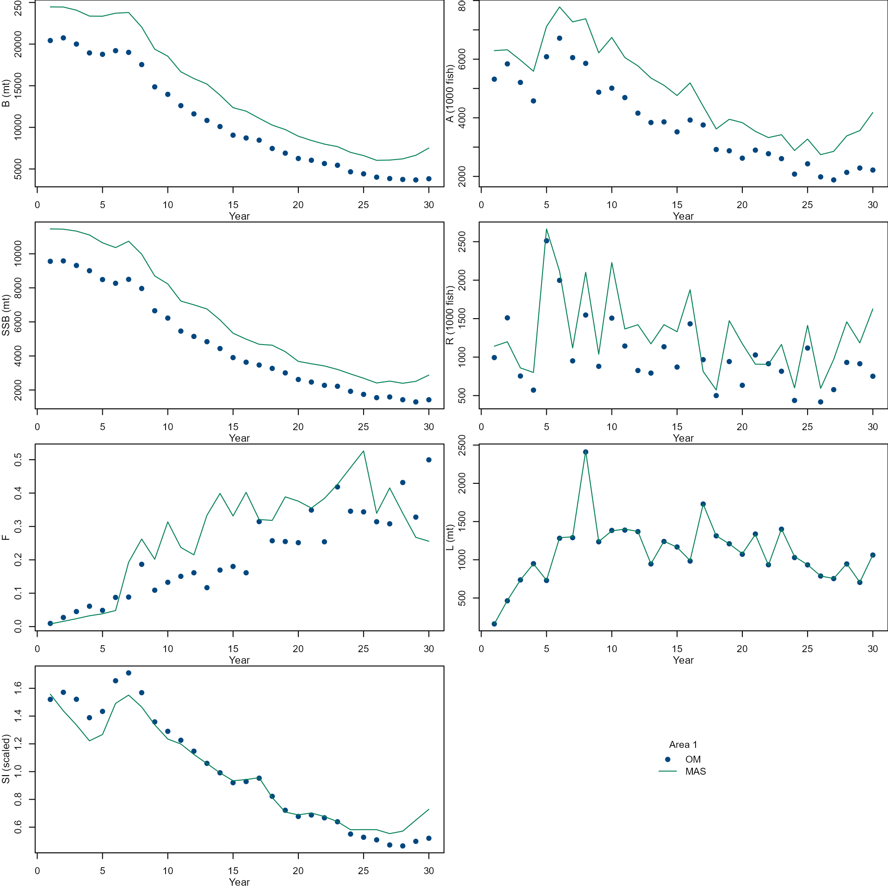
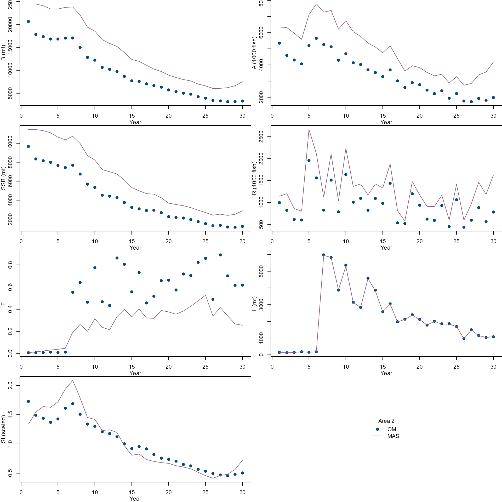

Metapopulation Case Study
Updated on 04/28/2021
Source:vignettes/005_MetapopulationCaseStudy.Rmd
005_MetapopulationCaseStudy.RmdRead input data
data_path <- system.file("extdata", package = "r4MAS")
om_path <- file.path(data_path, "externalom_example")
load(file.path(om_path, "metapopulation.RData"))Convert spatial OM input to MAS input
# Load r4MAS module
r4mas <- Rcpp::Module("rmas", PACKAGE = "r4MAS")
nareas <- length(om_input)
area_id <- 1:nareas
npopulations <- length(om_input)
population_id <- 1:npopulations
nyears <- vector(mode = "list", length = nareas)
nyears <- lapply(
seq_along(area_id),
function(x) {
nyears[[x]] <- om_input[[x]]$nyr
}
)
nseasons <- vector(mode = "list", length = nareas)
nseasons <- lapply(
seq_along(area_id),
function(x) {
nseasons[[x]] <- 1
}
)
nages <- vector(mode = "list", length = nareas)
nages <- lapply(
seq_along(area_id),
function(x) {
nages[[x]] <- om_input[[x]]$nages
}
)
ages <- vector(mode = "list", length = nareas)
ages <- lapply(
seq_along(area_id),
function(x) {
ages[[x]] <- om_input[[x]]$ages
}
)
areas <- vector(mode = "list", length = nareas)
areas <- lapply(
seq_along(area_id),
function(x) {
temp <- new(r4mas$Area)
temp$name <- paste("area", x, sep="")
areas[[x]] <- temp
}
)
recruitment <- vector(mode = "list", length = nareas)
recruitment <- lapply(
seq_along(area_id),
function(x) {
temp <- new(r4mas$BevertonHoltRecruitment)
temp$R0$value <- om_input[[x]]$R0 / 1000
temp$R0$estimated <- TRUE
temp$R0$phase <- 1
temp$h$value <- om_input[[x]]$h
temp$h$estimated <- FALSE
temp$h$phase <- 3
temp$h$min <- 0.2001
temp$h$max <- 1.0
temp$sigma_r$value <- om_input[[x]]$logR_sd
temp$sigma_r$estimated <- FALSE
temp$sigma_r$min <- 0
temp$sigma_r$max <- 1.0
temp$sigma_r$phase <- 2
temp$estimate_deviations <- TRUE
temp$constrained_deviations <- TRUE
temp$deviations_min <- -15.0
temp$deviations_max <- 15.0
temp$deviation_phase <- 2
temp$SetDeviations(om_input[[x]]$logR.resid)
temp$use_bias_correction <- FALSE
recruitment[[x]] <- temp
}
)
growth <- vector(mode = "list", length = nareas)
growth <- lapply(
seq_along(area_id),
function(x) {
temp <- new(r4mas$VonBertalanffy)
empirical_weight <- rep(om_input[[x]]$W.kg, times = om_input[[x]]$nyr)
survey_empirical_weight <- replicate(om_input[[x]]$nages * om_input[[x]]$nyr, 1.0)
temp$SetUndifferentiatedCatchWeight(empirical_weight)
temp$SetUndifferentiatedWeightAtSeasonStart(empirical_weight)
temp$SetUndifferentiatedWeightAtSpawning(empirical_weight)
temp$SetUndifferentiatedSurveyWeight(survey_empirical_weight)
growth[[x]] <- temp
}
)
maturity <- vector(mode = "list", length = nareas)
for (x in 1:length(maturity)){
temp <- new(r4mas$Maturity)
temp$values <- om_input[[x]]$mat.age * 0.5
maturity[[x]] <- temp
}
natural_mortality <- vector(mode = "list", length = nareas)
natural_mortality <- lapply(
seq_along(area_id),
function(x) {
temp <- new(r4mas$NaturalMortality)
temp$SetValues(om_input[[x]]$M.age)
natural_mortality[[x]] <- temp
}
)
movement <- vector(mode = "list", length = nareas)
movement <- lapply(
seq_along(area_id),
function(x) {
temp <- new(r4mas$Movement)
movement_matrix <- om_input[[x]]$movement_matrix[[1]] # time-invariant movement
seasonal_movement<-c(rep(as.vector(movement_matrix), nseasons[[x]]))
temp$connectivity_females<-seasonal_movement
temp$connectivity_males<-seasonal_movement
temp$connectivity_recruits<-rep(0.0, length(seasonal_movement))
movement[[x]] <- temp
}
)
initial_deviations <- vector(mode = "list", length = nareas)
initial_deviations <- lapply(
seq_along(area_id),
function(x) {
temp <- new(r4mas$InitialDeviations)
temp$values <- rep(0.1, times = om_input[[x]]$nages)
temp$estimate <- TRUE
temp$phase <- 2
initial_deviations[[x]] <- temp
}
)
population <- vector(mode = "list", length = nareas)
population <- lapply(
seq_along(population_id),
function(x) {
temp <- new(r4mas$Population)
for (y in 1:nyears[[x]]) {
temp$AddMovement(movement[[x]]$id, y)
}
for(a in 1:nareas){
temp$AddNaturalMortality(natural_mortality[[a]]$id, areas[[a]]$id, "undifferentiated")
temp$AddMaturity(maturity[[a]]$id, areas[[a]]$id, "undifferentiated")
temp$AddRecruitment(recruitment[[a]]$id, 1, areas[[a]]$id)
temp$SetInitialDeviations(initial_deviations[[a]]$id, areas[[a]]$id, "undifferentiated")
temp$SetGrowth(growth[[a]]$id)
temp$sex_ratio <- 0.5
}
population[[x]] <- temp
}
)
catch_index <- vector(mode = "list", length = nareas)
catch_index <- lapply(
seq_along(area_id),
function(x) {
temp <- new(r4mas$IndexData)
temp$values <- em_input[[x]]$L.obs$fleet1
temp$error <- rep(em_input[[x]]$cv.L$fleet1, times = om_input[[x]]$nyr)
catch_index[[x]] <- temp
}
)
catch_comp <- vector(mode = "list", length = nareas)
catch_comp <- lapply(
seq_along(area_id),
function(x) {
temp <- new(r4mas$AgeCompData)
temp$values <- as.vector(t(em_input[[x]]$L.age.obs$fleet1))
temp$sample_size <- rep(em_input[[x]]$n.L$fleet1, nyears[[x]] * nseasons[[x]])
catch_comp[[x]] <- temp
}
)
fleet_index_comp_nll <- vector(mode = "list", length = nareas)
fleet_index_comp_nll <- lapply(
seq_along(area_id),
function(x) {
temp <- new(r4mas$Lognormal)
temp$use_bias_correction <- FALSE
fleet_index_comp_nll[[x]] <- temp
}
)
fleet_age_comp_nll <- vector(mode = "list", length = nareas)
fleet_age_comp_nll <- lapply(
seq_along(area_id),
function(x) {
temp <- new(r4mas$Multinomial)
fleet_age_comp_nll[[x]] <- temp
}
)
fleet_selectivity <- vector(mode = "list", length = nareas)
fleet_selectivity <- lapply(
seq_along(area_id),
function(x) {
temp <- new(r4mas$LogisticSelectivity)
temp$a50$value <- om_input[[x]]$sel_fleet$fleet1$A50.sel
temp$a50$estimated <- TRUE
temp$a50$phase <- 2
temp$a50$min <- 0.0
temp$a50$max <- max(om_input[[x]]$ages)
temp$slope$value <- 1 / om_input[[x]]$sel_fleet$fleet1$slope.sel
temp$slope$estimated <- TRUE
temp$slope$phase <- 2
temp$slope$min <- 0.0001
temp$slope$max <- 5
fleet_selectivity[[x]] <- temp
}
)
fishing_mortality <- vector(mode = "list", length = nareas)
fishing_mortality <- lapply(
seq_along(area_id),
function(x) {
temp <- new(r4mas$FishingMortality)
temp$estimate <- TRUE
temp$phase <- 1
temp$min <- 0.0
temp$max <- 4
temp$SetValues(apply(om_output$stocks$stock1$FAA, 1, max))
fishing_mortality[[x]] <- temp
}
)
fleet <- vector(mode = "list", length = nareas)
fleet <- lapply(
seq_along(area_id),
function(x) {
temp <- new(r4mas$Fleet)
temp$AddIndexData(catch_index[[x]]$id, "undifferentiated")
temp$AddAgeCompData(catch_comp[[x]]$id, "undifferentiated")
temp$SetIndexNllComponent(fleet_index_comp_nll[[x]]$id)
temp$SetAgeCompNllComponent(fleet_age_comp_nll[[x]]$id)
temp$AddSelectivity(fleet_selectivity[[x]]$id, 1, areas[[x]]$id)
temp$AddFishingMortality(fishing_mortality[[x]]$id, 1, areas[[x]]$id)
fleet[[x]] <- temp
}
)
survey_index <- vector(mode = "list", length = nareas)
survey_index <- lapply(
seq_along(area_id),
function(x) {
temp <- new(r4mas$IndexData)
temp$values <- em_input[[x]]$survey.obs$survey1
temp$error <- rep(em_input[[x]]$cv.survey$survey1, times = om_input[[x]]$nyr)
survey_index[[x]] <- temp
}
)
survey_comp <- vector(mode = "list", length = nareas)
survey_comp <- lapply(
seq_along(area_id),
function(x) {
temp <- new(r4mas$AgeCompData)
temp$values <- as.vector(t(em_input[[x]]$survey.age.obs$survey1))
temp$sample_size <- rep(em_input[[x]]$n.survey$survey1, times = om_input[[x]]$nyr)
survey_comp[[x]] <- temp
}
)
survey_index_comp_nll <- vector(mode = "list", length = nareas)
survey_index_comp_nll <- lapply(
seq_along(area_id),
function(x) {
temp <- new(r4mas$Lognormal)
temp$use_bias_correction <- FALSE
survey_index_comp_nll[[x]] <- temp
}
)
survey_age_comp_nll <- vector(mode = "list", length = nareas)
survey_age_comp_nll <- lapply(
seq_along(area_id),
function(x) {
temp <- new(r4mas$Multinomial)
survey_age_comp_nll[[x]] <- temp
}
)
survey_selectivity <- vector(mode = "list", length = nareas)
survey_selectivity <- lapply(
seq_along(area_id),
function(x) {
temp <- new(r4mas$LogisticSelectivity)
temp$a50$value <- om_input[[x]]$sel_survey$survey1$A50.sel
temp$a50$estimated <- TRUE
temp$a50$phase <- 2
temp$a50$min <- 0
temp$a50$max <- max(om_input[[x]]$ages)
temp$slope$value <- 1 / om_input[[x]]$sel_survey$survey1$slope.sel
temp$slope$estimated <- TRUE
temp$slope$phase <- 2
temp$slope$min <- 0.0001
temp$slope$max <- 5
survey_selectivity[[x]] <- temp
}
)
survey <- vector(mode = "list", length = nareas)
survey <- lapply(
seq_along(area_id),
function(x) {
temp <- new(r4mas$Survey)
temp$AddIndexData(survey_index[[x]]$id, "undifferentiated")
temp$AddAgeCompData(survey_comp[[x]]$id, "undifferentiated")
temp$SetIndexNllComponent(survey_index_comp_nll[[x]]$id)
temp$SetAgeCompNllComponent(survey_age_comp_nll[[x]]$id)
temp$AddSelectivity(survey_selectivity[[x]]$id, 1, areas[[x]]$id)
# Catchability settings
temp$q$value <- em_input[[x]]$survey_q$survey1 * 1000
temp$q$min <- 0
temp$q$max <- 1
temp$q$estimated <- TRUE
temp$q$phase <- 1
survey[[x]] <- temp
}
)
mas_model <- new(r4mas$MASModel)
mas_model$nyears <- nyears[[1]]
mas_model$nseasons <- nseasons[[1]]
mas_model$nages <- nages[[1]]
mas_model$extended_plus_group <- max(ages[[1]])
mas_model$ages <- ages[[1]]
mas_model$catch_season_offset <- 0.0
mas_model$spawning_season_offset <- 0.0
mas_model$survey_season_offset <- 0.0
for (i in 1:length(population)){
mas_model$AddPopulation(population[[i]]$id)
}
for (i in 1:length(fleet)){
mas_model$AddFleet(fleet[[i]]$id)
}
for (i in 1:length(survey)){
mas_model$AddSurvey(survey[[i]]$id)
}
mas_model$max_line_searches <- 500
# Run MAS
mas_model$Run()
# Write MAS outputs to a json file
write(mas_model$GetOutput(),
file = file.path(om_path, "mas_output.json")
)
# Reset MAS for next run
mas_model$Reset()Aggregate output and compare estimates with "true" values
om <- vector(mode="list", length=length(population))
for (i in seq_along(population_id)){
om[[i]]$biomass <- om_output$stocks[[i]]$biomass.mt
om[[i]]$abundance <- om_output$stocks[[i]]$abundance / 1000
om[[i]]$ssb <- om_output$stocks[[i]]$SSB
om[[i]]$recruit <- om_output$stocks[[i]]$N.age[, 1] / 1000
om[[i]]$f <- apply(om_output$stocks[[i]]$FAA, 1, max)
om[[i]]$landing <- om_output$stocks[[i]]$L.mt$fleet1
om[[i]]$survey <- om_output$stocks[[i]]$survey_index$survey1
om[[i]]$msy <- om_output$stocks[[i]]$msy$msy
om[[i]]$fmsy <- round(om_output$stocks[[i]]$msy$Fmsy, digits = 3)
om[[i]]$ssbmsy <- om_output$stocks[[i]]$msy$SSBmsy
om[[i]]$fratio <- om[[i]]$f / om[[i]]$fmsy
om[[i]]$ssbratio <- om[[i]]$ssb / om[[i]]$ssbmsy
om[[i]]$agecomp <- apply(om_output$stocks[[i]]$N.age / 1000, 1, function(x) x / sum(x))
om[[i]]$r0 <- om_input[[i]]$R0 / 1000
om[[i]]$q <- om_output$stocks[[i]]$survey_q
om[[i]]$selexparm_fleet <- om_input[[i]]$sel_fleet
om[[i]]$selexparm_survey <- om_input[[i]]$sel_survey
om[[i]]$recruit_deviation <- om_input[[i]]$logR.resid
}
mas_output <- jsonlite::read_json(file.path(om_path, "mas_output.json"))
parameter <- unlist(mas_output$estimated_parameters$parameters)
parameter_table <- as.data.frame(matrix(parameter, ncol = 3, byrow = TRUE))
colnames(parameter_table) <- c(
"Parameter",
"Value",
"Gradient"
)
parameter_table$Value <- round(as.numeric(parameter_table$Value),
digits = 6
)
parameter_table$Gradient <- round(as.numeric(parameter_table$Gradient),
digits = 6
)
popdy <- mas_output$population_dynamics
mas <- vector(mode="list", length=length(population))
for (i in seq_along(population_id)){
pop <- popdy$populations[[i]]
flt <- popdy$fleets[[i]]
srvy <- popdy$surveys[[i]]
mas[[pop$id]]$biomass <- unlist(pop$undifferentiated$biomass$values)
mas[[pop$id]]$abundance <- unlist(pop$undifferentiated$abundance$values)
mas[[pop$id]]$ssb <- unlist(pop$undifferentiated$spawning_stock_biomass$values)
mas[[pop$id]]$recruit <- unlist(pop$undifferentiated$recruits$values)
mas[[pop$id]]$f <- unlist(pop$undifferentiated$fishing_mortality$values)
mas[[pop$id]]$landing <- unlist(flt$undifferentiated$catch_biomass$values)
mas[[pop$id]]$survey <- unlist(srvy$undifferentiated$survey_biomass$values)
mas[[pop$id]]$agecomp <- apply(
matrix(unlist(pop$undifferentiated$numbers_at_age$values),
nrow = popdy$nyears,
ncol = popdy$nages,
byrow = T
),
1,
function(x) x / sum(x)
)
}
for (p in seq_along(population_id)){
par(mfrow = c(4, 2), mar = c(3, 3, 0, 0))
var <- c(
"biomass", "abundance", "ssb", "recruit", "f",
"landing", "survey"
)
ylab <- c(
"B (mt)", "A (1000 fish)",
"SSB (mt)", "R (1000 fish)",
"F", "L (mt)", "SI (scaled)"
)
for (i in 1:length(var)) {
ylim <- range(om[[p]][[var[i]]], mas[[p]][[var[i]]])
plot(om_input[[p]]$year, om[[p]][[var[i]]],
xlab = "", ylab = "",
ylim = ylim, pch = 19
)
lines(om_input[[p]]$year, mas[[p]][[var[i]]],
col = "deepskyblue3", lty = 1
)
mtext("Year", side = 1, line = 2, cex = 0.7)
mtext(ylab[i], side = 2, line = 2, cex = 0.7)
}
plot.new()
legend("center",
c("OM", "MAS"),
pch = c(19, NA),
lty = c(NA, 1),
col = c("black", "deepskyblue3"),
bty = "n",
title = paste("Area", p)
)
}